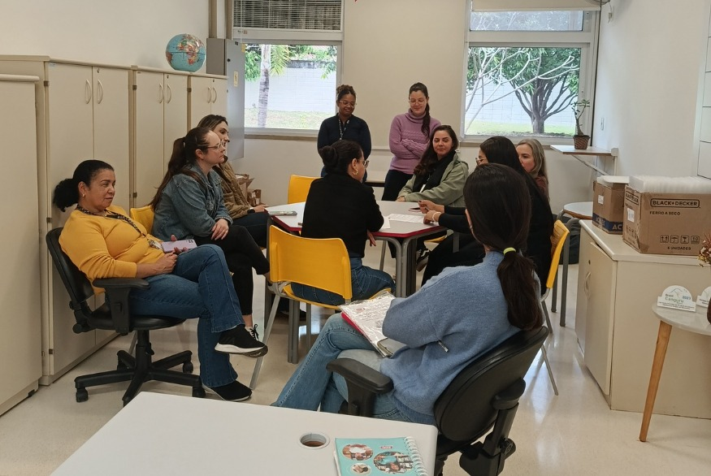

Somos um grupo de estudantes do SENAI responsáveis pelo desenvolvimento do projeto "Mulheres — Histórias que inspiram". Nosso objetivo é valorizar e dar visibilidade às mulheres que fazem parte da nossa comunidade escolar, apresentando suas histórias, trajetórias profissionais, funções, desafios e conquistas. E com este projeto, buscamos reconhecer a importância de cada uma delas e mostrar como suas contribuições ajudam a construir uma escola melhor.
DESTAQUE

Clique para ler a entrevista completa
Trabalho na instituição desde 2003, somando 23 anos no ensino fundamental. Sou pedagoga de formação e atuei durante 19 anos em sala de aula com alfabetização de primeiro e segundo ano. Em 2021 passei pelos processos seletivos e, em 2022, assumi como coordenadora pedagógica numa escola de Jundiaí. Após ingressar no programa de treinamento de diretores da Rede SESI e passar por várias formações no estado, assumi a direção do SESI 242 de Vinhedo no início de 2026.
O que eu mais gosto no meu trabalho é cuidar das pessoas: garantir uma educação de qualidade aos alunos, apoiar a formação continuada dos professores e proporcionar um ambiente agradável e acolhedor para todas as equipes de trabalho. A gestão estratégica é fundamental porque é o planejamento que faz toda a parte operacional da escola acontecer.
O maior desafio da minha trajetória tem sido acompanhar as mudanças aceleradas das novas gerações e da tecnologia para manter os alunos engajados. Minha maior conquista profissional foi alcançar o sonho de me tornar diretora. Minha inspiração é minha mãe, que mesmo com pouca escolaridade, lutou muito para que eu pudesse estudar. Para mim, trabalhar com educação é minha vida. Deixo como mensagem a importância de estudarmos continuamente e valorizarmos a nossa comunidade escolar.